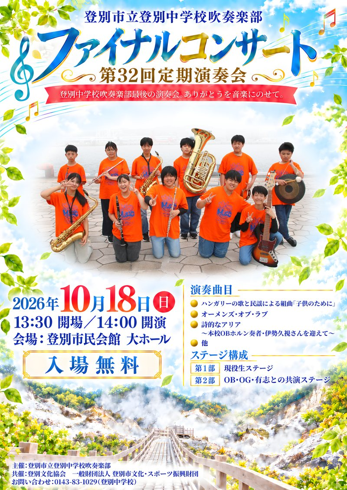

第1部 現役生ステージ
吹奏楽部のみなさんへ
吹奏楽部のみなさんへ
いよいよ最後の定期演奏会です。
1曲ずつ、悔いなく鳴らしきりましょう。
1曲ずつ、悔いなく鳴らしきりましょう。
開演まで
—日
—時間
—分
—秒
2026年10月18日（日）14:00 開演
開催概要
- 日 程
- 令和8年10月18日（日）
- 時 間
- 13:30 開場 ／ 14:00 開演
- 会 場
- 登別市民会館 大ホール
- 入場料
- 入場無料
- 構 成
- 第1部 現役生ステージ
第2部 OB・OG・有志との共演ステージ
第1部 現役生ステージ
第1部の曲目
参考音源（YouTube）で予習できます
各曲の「▶ 参考音源」を押すと、YouTubeの参考演奏が開きます。譜面と合わせて、練習前の予習にお役立てください。第2部で演奏する曲の参考音源も、このページの下にあります。
-
1
参考音源いつか王子様が出場者のみアンサンブルコンテスト出場者による演奏
-
2
参考音源ピースサイン
-
3
参考音源糸
-
4
参考音源情熱大陸
-
5
参考音源ハンガリーの歌と民謡による組曲
「子供のために」
参考音源はあくまで参考です。テンポや細かいニュアンスは、合奏での指示にしたがってください。
第2部 OBOGステージ
51名
の先輩が出演します
この演奏会には、卒業した先輩たちが51名集まります。
第2部は、現役生と先輩たちの共演ステージです。
みなさんの音に、たくさんの先輩の音が重なります。
↓ 第2部の曲目と参考音源を見る
第2部は、現役生と先輩たちの共演ステージです。
みなさんの音に、たくさんの先輩の音が重なります。
第2部 OBOGステージ
第2部の曲目
先輩たちと一緒に演奏するステージです。下の並びが本番の演奏順です。
ポスター
ポスターができました。おうちの方への連絡や、掲示にお使いください。

JPG画像でダウンロード
LINEでの共有・スマホでの表示に（0.5MB）
{kind=link}
LINEでの共有・スマホでの表示に（0.5MB）
※ ポスターを押すと大きく表示されます。スマホでは長押しで画像を保存できます。
※ 印刷用の大きなデータが必要なときは、顧問の先生に声をかけてください。
※ 印刷用の大きなデータが必要なときは、顧問の先生に声をかけてください。
最後の定期演奏会に向けて
この音楽室から、何十年ぶんもの音が生まれました。その最後の一日をつくるのは、いまここにいるみなさんです。一日一日の合奏を大切に、本番の舞台で鳴らしきりましょう。